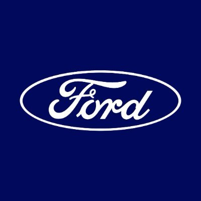
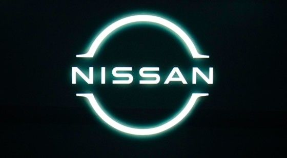

| Fundada en 1903, es una de las marcas más emblemáticas de Estados Unidos. Conocida por su línea de camiones, como la Ford F-Series, así como por modelos icónicos como el Mustang. |
 |
| Parte de General Motors, Chevrolet es famosa por su amplia gama de vehículos, desde sedanes hasta SUVs y camionetas. El Chevrolet Silverado es uno de los camiones más vendidos en América. |
 |
| Esta marca japonesa es conocida por su confiabilidad y eficiencia. Ofrece una amplia gama de vehículos, incluyendo el Camry y la Toyota RAV4. También es líder en el mercado de autos híbridos con el Prius. |
|
| Con sede en Alemania, Volkswagen es conocida por su enfoque en la ingeniería y la calidad. Modelos como el Golf y el Passat son populares, así como la SUV Tiguan. |
|
| Otra marca japonesa, Nissan es conocida por su innovación y tecnología. Modelos destacados incluyen el Nissan Altima y la SUV Rogue. También ha tenido éxito en el mercado de vehículos eléctricos con el Nissan Leaf. |
 |